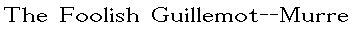
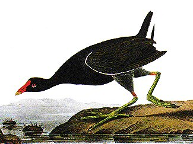

Monday, October the 18th, 2004
back to: title, date or indexes
Following a plenary session of the Hooting Yard Editorial Committee, chaired by Mrs Gubbins, who also supplied platefuls of contaminated pastry-based confections, it has been decided to rename the Hooting Yard website for an experimental period. Until further notice, this collection of prose and pictures will be known as:

and the new logo will be, not as you might think Audubon's depiction of the foolish guillemot--murre, but his equally splendid common gallinule:

This bird has the pensive, concentrated look that we hope to elicit from all our readers. Do try to remember the new name of the site, and next time you are at an ambassadorial cocktail party, works outing, or indeed just babbling loudly into your mobile phone like a nincompoop, do not say “Gosh, yes, Hooting Yard certainly makes me chuckle!” but instead “Well, heavens to Betsy, have you seen the latest in The Foolish Guillemot--Murre?” Many thanks in advance for your cooperation with this important new initiative.